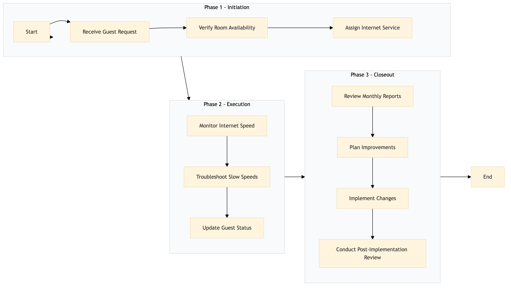

| Role | Steps |
|---|---|
| Front Desk Agent | 1.1 1.3 1.2 2.3 |
| IT Support Technician | 2.1 2.2 3.3 |
| IT Manager | 3.1 3.2 3.4 |
| Step | Name | Role | System | Input | Output | KPI | Dec? | Exc? | Pain Point / Risk |
|---|---|---|---|---|---|---|---|---|---|
| 1.1 | Receive Guest Request | Front Desk Agent | Oracle OPERA Cloud | Guest request for high-speed internet | Updated guest profile in Oracle OPERA Cloud | Less than 1 minute | N | Y | Handling multiple requests simultaneously |
| 1.2 | Verify Room Availability | Front Desk Agent | Oracle OPERA Cloud | Guest room number | Room status and internet availability | Less than 30 seconds | Y | N | Incorrect room information |
| 1.3 | Assign Internet Service | Front Desk Agent | Oracle OPERA Cloud | Room number and internet package details | Internet service activated in Oracle OPERA Cloud | Less than 1 minute | N | Y | Technical issues with the PMS system |
| 2.1 | Monitor Internet Speed | IT Support Technician | Knowcross HotSOS | Room number and internet service details | Internet speed report | Less than 5 minutes | Y | N | Network congestion during peak hours |
| 2.2 | Troubleshoot Slow Speeds | IT Support Technician | Knowcross HotSOS | Internet speed report and room details | Resolved issue or escalation to higher support | Less than 10 minutes | Y | Y | Persistent network issues |
| 2.3 | Update Guest Status | Front Desk Agent | Oracle OPERA Cloud | Resolution details and guest feedback | Updated guest profile in Oracle OPERA Cloud | Less than 1 minute | N | Y | Incorrect information entry |
| 3.1 | Review Monthly Reports | IT Manager | Microsoft Power BI | Monthly internet service data | Performance analysis report | Less than 2 hours | Y | N | Data interpretation challenges |
| 3.2 | Plan Improvements | IT Manager | Microsoft Power BI | Performance analysis report and feedback | Improvement plan | Less than 1 hour | N | Y | Resource allocation issues |
| 3.3 | Implement Changes | IT Support Technician | Knowcross HotSOS | Improvement plan and technical specifications | Updated network infrastructure | Less than 2 days | Y | N | Vendor coordination delays |
| 3.4 | Conduct Post-Implementation Review | IT Manager | Microsoft Power BI | Post-implementation data and feedback | Final report and recommendations | Less than 1 hour | N | Y | Data collection challenges |
This process outlines the management of high-speed internet service at a Marriott full-service hotel, ensuring seamless connectivity and guest satisfaction.